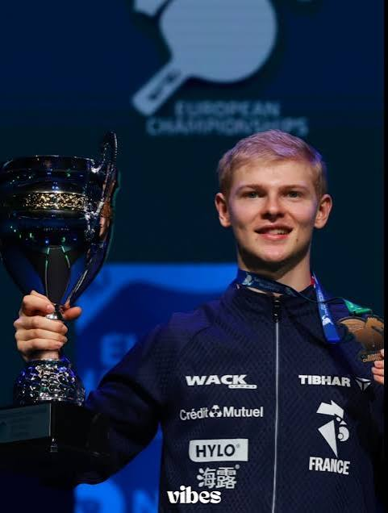

Un palmarès déjà historique sur la scène mondiale
À seulement 20 ans, Félix Lebrun s'est déjà construit l'un des plus beaux palmarès du tennis de table européen. Révélé au grand public par sa médaille d'or aux Jeux Européens de Cracovie en 2023, il entre dans la légende lors des Jeux Olympiques de Paris 2024 en remportant deux médailles de bronze historiques, en simple puis par équipes aux côtés de son frère Alexis et de Simon Gauzy.
Quelques mois plus tard, il s'impose devant son public au WTT Champions de Montpellier avant de remporter les prestigieuses WTT Finals en double à Fukuoka.
En 2026, il franchit un cap supplémentaire face aux meilleurs joueurs asiatiques : après un sacre au WTT Champions de Chongqing en mars et au Singapore Smash en double, il devient en août le premier joueur français de l'histoire à remporter un tournoi WTT Grand Smash lors de l'Europe Smash de Malmö (en simple et en double).
Une performance exceptionnelle qui lui permet d'atteindre la place de numéro 2 mondial, avant de réaliser un doublé en or aux Championnats d'Europe 2026 (simple et double messieurs) et de décrocher deux titres consécutifs de Champion de France senior en simple (2025 et 2026).
